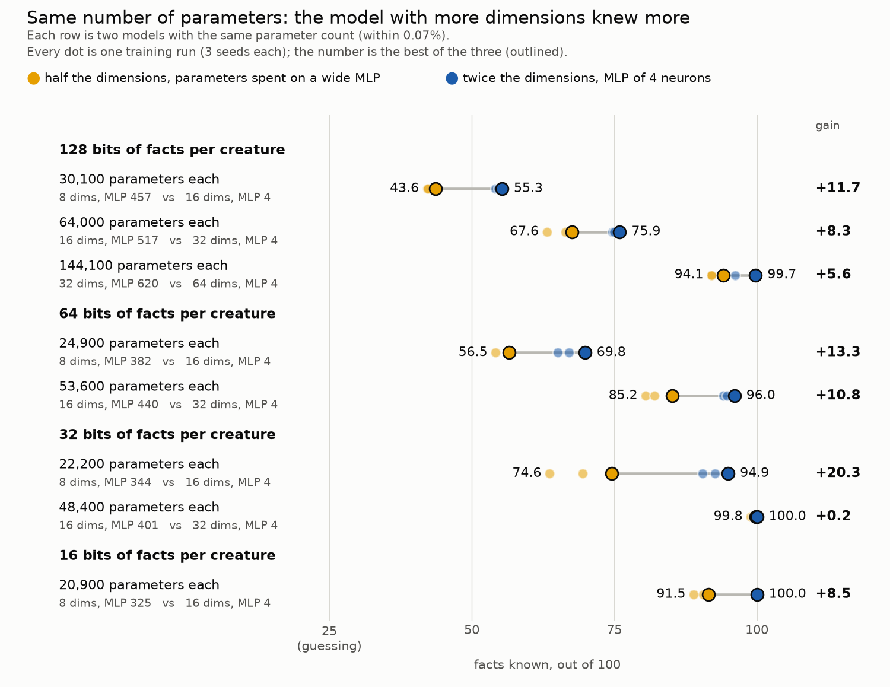
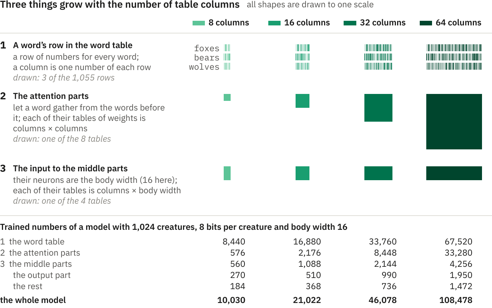

Small transformers store facts in the space their words live in
Preliminary results, November 2026
How much a model can remember depends mainly on the number of dimensions its words are represented in, not on its parameter count. At equal parameter count, the model with more dimensions knew more facts in every comparison that was not already at 100. Each coordinate of a word's vector stores about 3 bits of facts; an extra MLP weight stores about 0.5.
In brief. Small transformers (2 layers) are trained on made-up languages whose only content is random facts about up to 1,024 creatures, so each language is a known number of bits to store. Two sizes are varied: the dimensions of the word vectors (8 to 64) and the width of the MLP (4 to 128 neurons). The score is the share of facts recalled, out of 100; 25 is guessing. The Setup tab explains the language, the information and the model.
1. The dimensions set the limit; the MLP barely moves it
| 8 bits | 16 bits | 32 bits | 64 bits | 128 bits | |
|---|---|---|---|---|---|
| 8 dims | 100 | 93 | 65 | 52 | 42 |
| 16 dims | 100 | 100 | 96 | 77 | 59 |
| 32 dims | 100 | 100 | 100 | 100 | 87 |
| 64 dims | 100 | 100 | 100 | 100 | 100 |
Facts known (out of 100) by dimensions of the word vectors and bits of facts per creature; middle of 3 seeds, MLP of 128 neurons. Where dimensions and bits double together, the score changes far less than along a row (e.g. 93, 96, 100, 100). By contrast, at 8 dimensions and 128 bits, widening the MLP from 4 to 128 to 457 neurons gave 39, 42, 42.
2. At the same parameter count, more dimensions win

Each row is one parameter count and two models that both have it: one with half the dimensions and a very wide MLP (316 to 620 neurons), one with twice the dimensions and an MLP of 4 neurons. Comparing each model's best of three seeds, the higher-dimensional model knew more in all 8 pairs that were not both at 100: by 6 to 20 points in seven of them, and by under 1 point in the eighth (99.8 against 100). The middle seeds give the same picture (4 to 23 points, and 0.6). In 6 of the 8, every seed scored below every seed of the higher-dimensional model. The other 7 pairs tested (lighter loads) both reached 100.
3. A coordinate stores about 3 bits; an MLP weight about 0.5

Estimated on the 128-bit language, counting each fact as either known or guessed. The per-coordinate figure is nearly the same at every dimension. For comparison, Morris et al. (2025) measured about 3.6 bits per parameter in GPT-style models.
Next
- Is it the trained coordinates (storage) or the room between words (geometry)? Test: a frozen random 64-dimensional word table, with the parameter count matched.
- Is it the words' space or the model's width? Test: 8-dimensional words projected into a 64-wide model.
Limits: small models, synthetic data, one learning rate, training capped at 640,000 steps (the size-matched models were still improving slowly at the cap).
The language, the information and the model
The "language". A made-up vocabulary of up to 1,024 creatures (foxes, crows, ...). Each creature is given a fixed list of facts: its colour, its food, where it lives, and so on. Each fact has four possible answers, and the answers are assigned at random. The model is never shown this list. It only reads short sentences generated from it (foxes and crows are black ., foxes do not eat seeds ., are foxes and bears black ? no) and is trained, like any language model, to predict the next word.

Left: one creature and its facts, the true answers outlined. Right: the test. The model is given the words in the pale boxes and must supply the outlined one.
Why a language is a known amount of information. Because the answers are random, a creature's facts cannot be worked out from another creature or from any rule: the only way to answer is to have stored each fact. One fact with four equally likely answers is 2 bits, so a language holds creatures × facts × 2 bits and nothing else. The largest one here holds 1,024 × 64 × 2 = 131,072 bits. The test measures how much of that a model has stored.
How the information is varied. By the number of creatures (16, 64, 256 or 1,024) and by the number of facts per creature (4, 8, 16, 32 or 64, that is 8 to 128 bits per creature). Creatures are used either equally often or with a Zipf distribution, as words are in real text. The results on this page are for 1,024 creatures used equally often.
The word table. The model's embedding matrix. It has one row for every word of the language, and a row is d trained numbers: the word's position in a d-dimensional space. When the model reads a word, that row is all it gets. d is the first thing varied: 8, 16, 32 or 64. As in any transformer, d is also the size of the vectors that pass between the layers (the residual stream).
The two widths. Each of the model's 2 layers has an attention part, which works on the d numbers, and an MLP, which spreads them over m neurons and brings them back to d. m is the second thing varied, separately from d: 4, 8, 16, 32, 64 or 128 neurons. Raising m adds parameters without adding dimensions; raising d adds both. Comparing the two is what separates "more parameters" from "more dimensions".
Every part outlined in blue has the size d; only the MLP's middle has the size m.
The score. "Facts known": given a creature and a kind of fact (foxes are ...), the model must rank the true answer first among the four. 100 means every fact of every creature; 25 is guessing. In all 2,880 models were trained (960 combinations of the settings above, 3 random seeds each), plus 45 size-matched models.
Words used in the figures below: table columns are the dimensions of a word's vector (the embedding size, which is also the width of the residual stream); body width is the number of neurons in each MLP; trained numbers are parameters.
The model
A transformer with 2 layers and 2 attention heads that reads a sentence word by word and predicts the next word, 512 sentences per training step. The word table holds a trained vector for every word. Each layer has an attention part and an MLP.
More dimensions change three things at once: every word's vector, the attention parts (8 times the dimensions give them about 58 times the parameters), and the input and output of each MLP. Only the MLP width stays as it is. So the main runs can show that more dimensions help, but not which part does it. The size-matched runs were added to test whether the parameter count explains it.

Parameter counts of a model with 1,024 creatures, 8 bits per creature and an MLP of 16 neurons, at each number of dimensions.
What was varied, and what was held the same
Five settings were varied, giving 960 combinations, each trained with 3 seeds: 2,880 runs. Everything else was the same in every run:
- One learning rate (0.003), chosen by a fixed rule from 240 practice runs before the counted runs began.
- One text. Every model of a language reads exactly the same sentences in the same order.
- One starting word table with 64 dimensions. A model with fewer starts from its first columns, so a word starts from the same numbers in every model.
- 2 layers and 2 heads at every size.

With unequal word use, the second creature appears half as often as the first, the third a third as often, and so on, much as words do in real text.
Five predictions about the outcome were written down before the counted runs began.
How a run ends
One rule sets the length of training, so that "cannot hold it" can be told from "has not learned it yet". A run is looked at after 40,000 steps and after each doubling, up to 640,000. It ends at the first look where one of these is true:
- Learned: facts known and questions about one creature are both 99 or more.
- No more gain: facts known rose by less than 1 point over the last doubling, and by less than 1 point over the one before.
- The limit: it has reached 640,000 steps.
A run's result is its scores at that point. To measure how often the rule stops a run too early, every tenth run was marked beforehand to be carried on for two more doublings.

Left: four runs, each drawn up to the look that ended it. Right: the 2,880 runs by reason and look.
The size-matched runs
For the language with 1,024 creatures and equal word use, at every bit size and for every pair of neighbouring dimension counts, the lower-dimensional model's MLP was widened (to 316 to 620 neurons) until its total parameter count equalled that of the model with twice the dimensions and an MLP of 4 neurons, to within 0.07%. That is 15 models with 3 seeds each: 45 runs. Learning rate, text, seeds and stopping rule are those of the main runs, and every run was carried on.
The training runs: settings, time and cost
One run. A model reads 512 sentences per training step (a sentence is up to 13 tokens) and is trained with AdamW at a learning rate of 0.003: 100 warm-up steps, then constant, no weight decay, gradients clipped at 1.0, 32-bit arithmetic. An averaged copy of the weights (decay 0.998) takes the test. A run lasts 40,000 to 640,000 steps, set by the stopping rule above. The models have 1,558 to 176,074 trained parameters. Because they are so small, 3 to 24 of them are trained together in one program on one graphics card.
| Stage | Runs | Training steps, all models | Sentences read | Time | Cost |
|---|---|---|---|---|---|
| Main runs | 2,880 | 727 million | 372 billion | 5.6 h | about $28 |
| Learning-rate check | 960 | 289 million | 148 billion | 2.2 h | about $15 |
| Size-matched runs | 45 | 19 million | 10 billion | 1.0 h | about $1.40 |
| All | 3,885 | 1.04 billion | 530 billion | 8.8 h | about $45 |
Time is the time from the first run starting to the last one ending. Cost is in Google Colab compute units at $0.10 each (about 282, 150 and 14 units). The learning-rate check trained the best seed of each of the 960 settings again at a third of the rate; it changed little. Not counted: the 240 short practice runs that chose the learning rate.
Where they ran. On rented Google Colab GPUs, up to ten machines at once, of whichever types Colab had free: T4, L4, A100, G4 and one H100. A scheduler written for this project hands the groups of models to the machines, moves work to faster cards as they become free and brings the results home.
On an H100 alone. One H100 would need an estimated 20 to 45 hours for all of the above, which is about $45 to $95 at Colab's price for it (21.8 units, about $2.18, an hour). The range comes from how full the card is kept: about 22 hours at the speed it reaches with full groups of models, about 43 hours at the speed measured when it joined late in a stage and only small groups were left. These are estimates from measured speeds, not a run on a single H100.